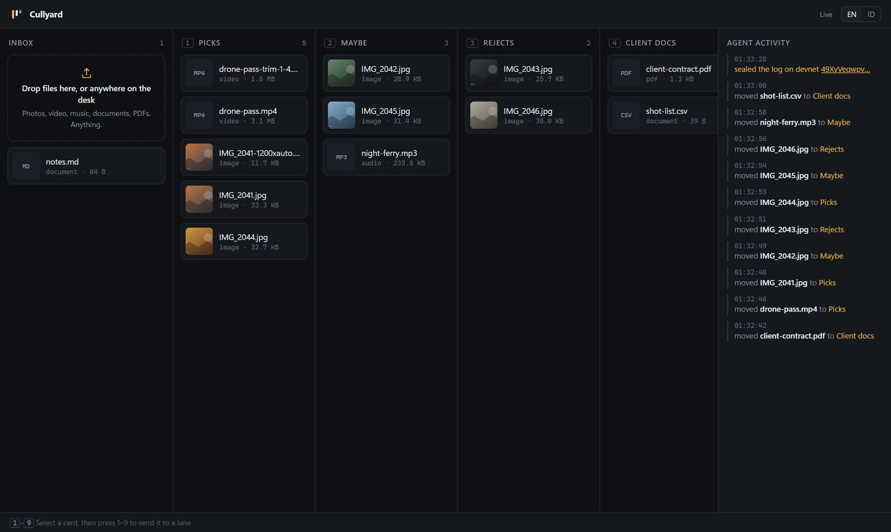

A local MCP server and desk that lets Claude Code or Antigravity sort and edit photos, video, music and documents, with each run sealed on Solana devnet.
The problem
Picking keepers from a wedding or a product shoot is slow, repetitive work done one frame at a time.
Clips, music beds and client PDFs land in one Downloads folder. Finding the right take means opening each one.
An agent can move files with shell commands, but you can't watch it, undo it, or show the client what happened.
The product

How it works
| Step | Tool | What happens |
|---|---|---|
| Read | scan_workspace · describe_file | Kind, size, pixel size, duration, codec, artist, page count |
| Sort | create_lane · move_to_lane | Moves into lane folders, refuses to overwrite or leave the workspace |
| Edit | resize_image · trim_media | WebP, JPG, PNG, AVIF copies; time-range cuts without re-encoding |
| Prove | log_digest · seal_run · verify_seal | SHA-256 of the move log, written to a devnet memo and checked back |
Why a chain at all
A photographer hands over selects. A studio hands over a cut. The client can check that the log of moves was not edited later. Only a hash goes on-chain, never file names or files.
Proof it runs
files sorted into 4 lanes
photo resized to 1200 px WebP
clip trimmed without re-encoding
automated tests passing
Where it sits
| Lightroom / Photo Mechanic | Filesystem MCP | Cullyard | |
|---|---|---|---|
| Any file type | Photos only | Yes | Yes |
| Driven by your AI agent | No | Yes | Yes |
| Live visual desk | Yes | No | Yes |
| Trim and resize copies | Photos | No | Yes |
| Verifiable run log | No | No | Devnet memo |
Next
Eleven tools, the desk, English and Indonesian, devnet seals, Windows first.
A shareable page that shows the picks and checks the seal, so the client verifies without a wallet.
Shared lanes for a team, mainnet seals on request, and paid hosting for hand-off pages.